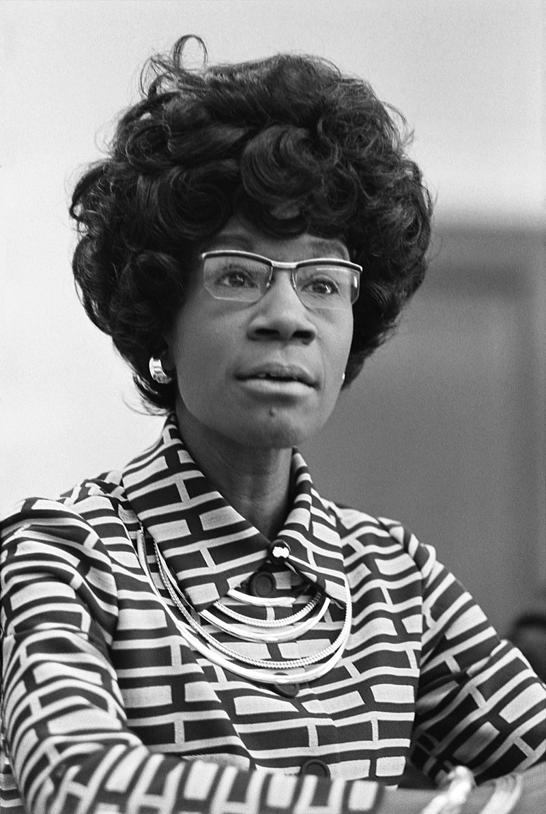

Shirley Chisholm made history as the first black woman elected to
Congress in 1968. She started out as a representative for Brooklyn
in the New York State legislature and specialized in education. When
getting elected to the U.S. House of Representatives four years
later, she was originally put into the Agriculture Commitee despite
representing an urban area. After endless perseverence, Chisholm was
able to persuade leaders to reassign her to an education committee
and served seven terms (14 years) in Congress.
Her actions helped open up opportunities for many future African
American political figures like President Barack Obama and Senator
Elizabeth Warren, but wanted to be remembered for "having guts."